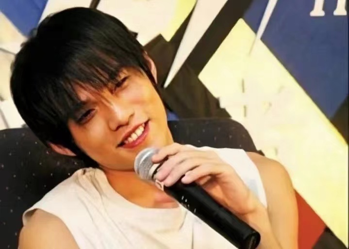
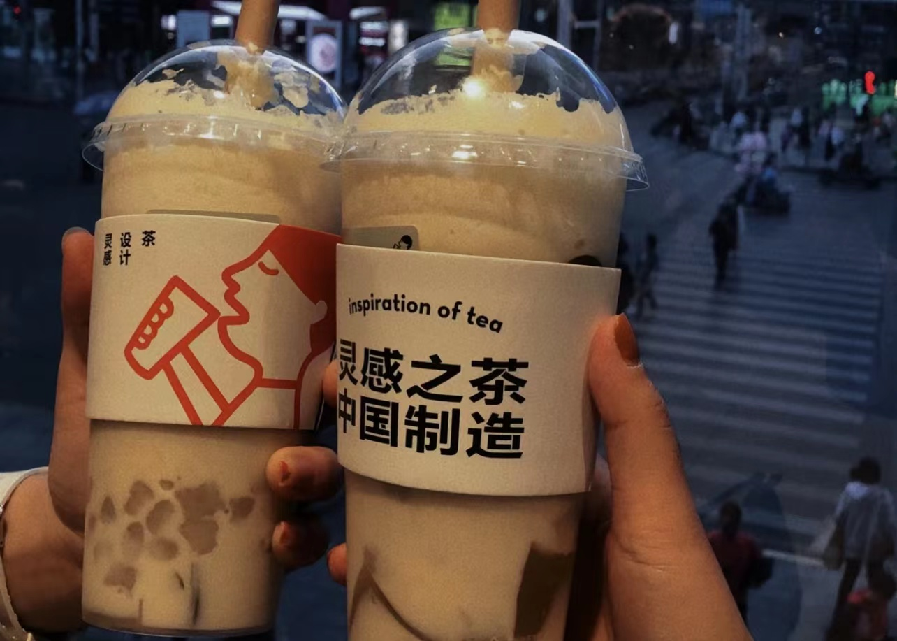
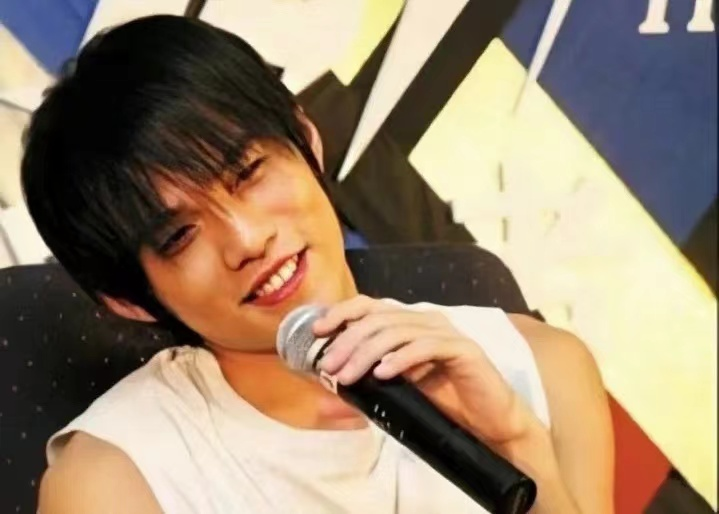
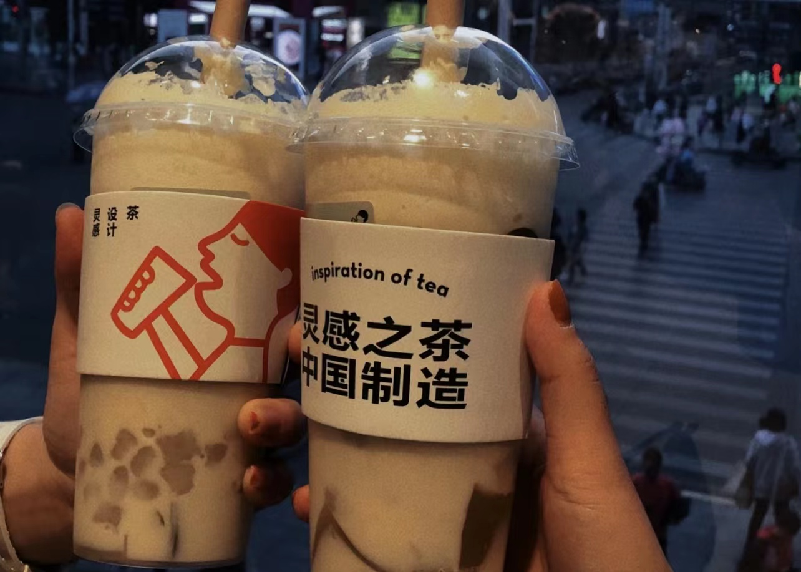

-About Me-
#From Guangzhou, China
Birthday: Jan 25th, 2000 Email: Wenyi.Huang@warwick.ac.uk Instagram: ellenee_51(click it♡) weibo/bilibili: ellenee_(click it♡)Nice to meet u :)
-My Favourite-
|  |  |  |
|
#From Guangzhou, China
Birthday: Jan 25th, 2000 Email: Wenyi.Huang@warwick.ac.uk Instagram: ellenee_51(click it♡) weibo/bilibili: ellenee_(click it♡)Nice to meet u :)
|  |  | |
|